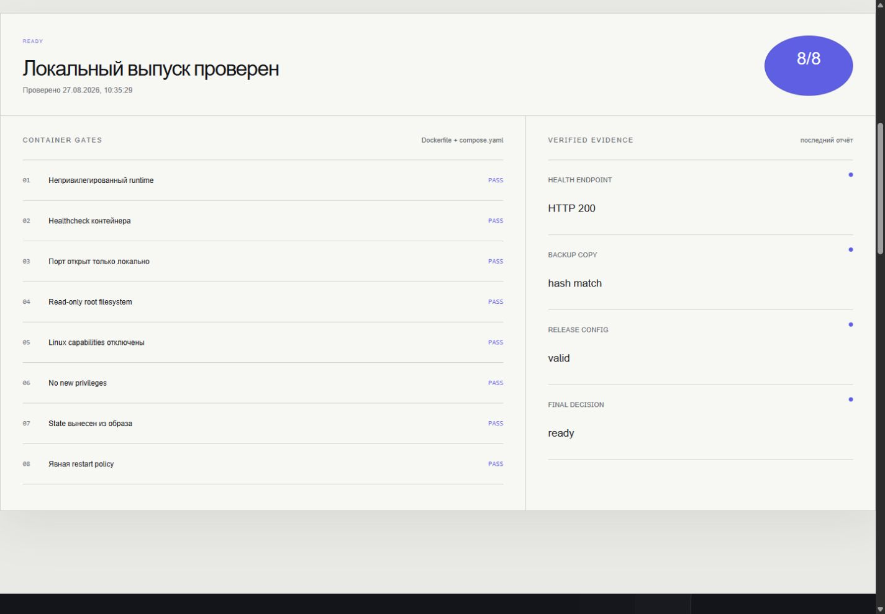
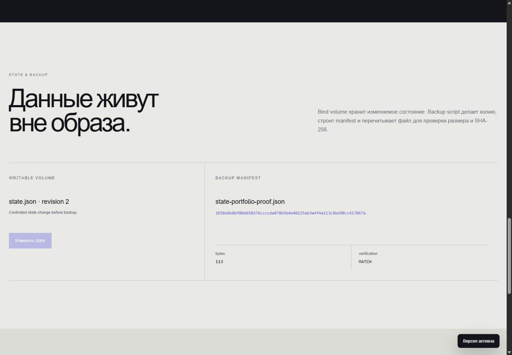
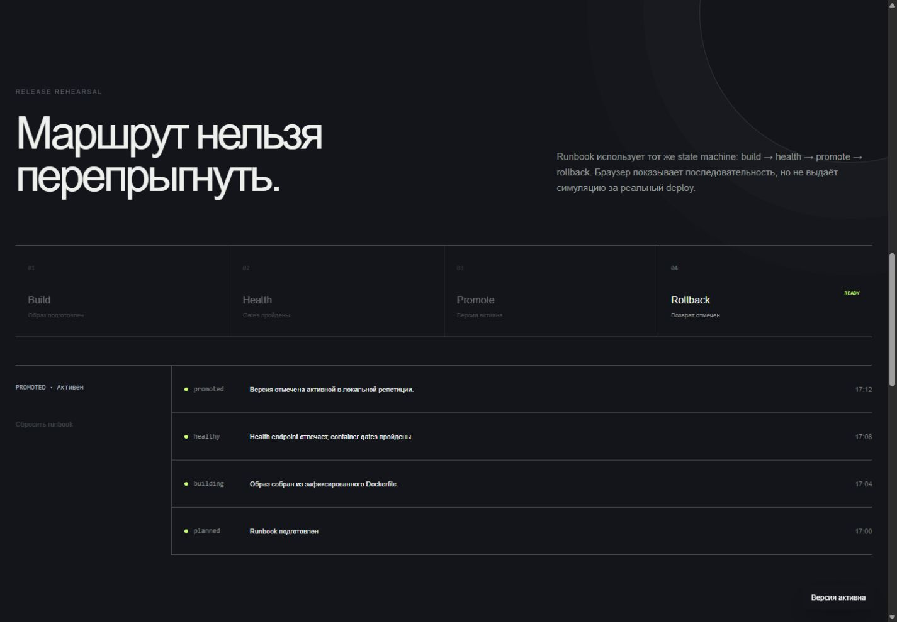

USER node · cap_drop ALL · no-new-privileges
LOCAL DEPLOYMENT PROOF
Готово —
Готово —
это когда
есть доказательства.
Контейнер, health endpoint и резервная копия связываются в один воспроизводимый отчёт.
Открыть рабочий продукт ↗- Роль
- DevOps · Backend · UX
- Runtime
- Docker · Node.js
- Проверка
- 13 tests · healthy

Не обещать
«готово».
Показать факты.
Вместо декоративного DevOps dashboard — Dockerfile, compose.yaml, живой health endpoint и SHA-256 manifest последней копии.
- 01Конфигурация читается
- 02Runtime отвечает
- 03Копия совпадает
Восемь условий
до запуска.
Непривилегированный пользователь, read-only root, отключённые capabilities, local bind, healthcheck, volume и явная restart policy.
127.0.0.1 bind · read-only root · tmpfs
Container healthcheck и HTTP 200 contract
Writable data вынесены из immutable image
Копия готова
после чтения.
Скрипт сохраняет state.json, перечитывает результат и сравнивает bytes и SHA-256 с manifest.

STATErevision 2
→COPY113 bytes
→VERIFYhash match
Маршрут нельзя
перепрыгнуть.
Интерактивный state machine показывает последовательность и rollback, но честно не запускает Docker из браузера.

Локальный выпуск
проверен полностью.
Подтверждено
Docker build, healthy container, hardened local runtime, writable volume, точная backup copy и последовательный runbook.
Отдельный этап
Registry, CI/CD provider, remote host, DNS, TLS, ingress, secret store, zero-downtime и production restore.